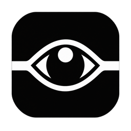
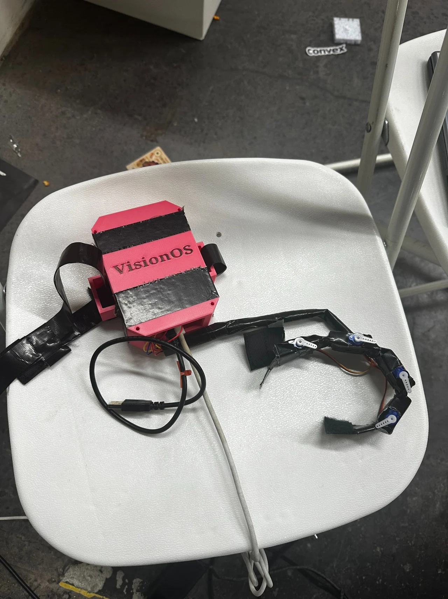
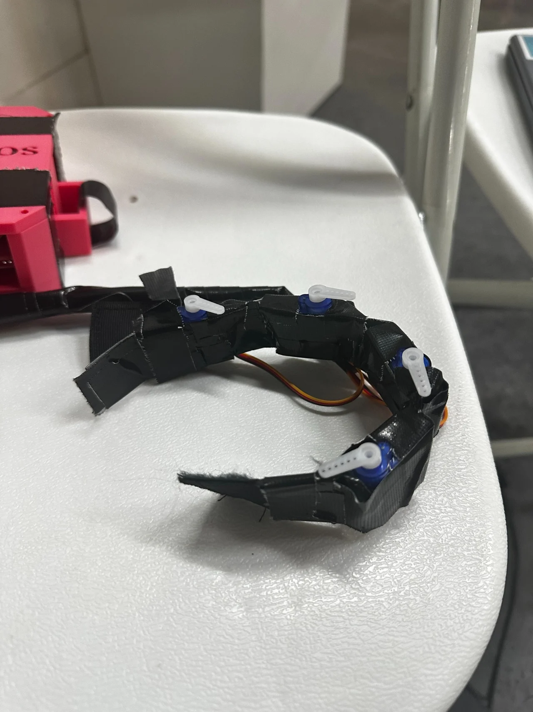
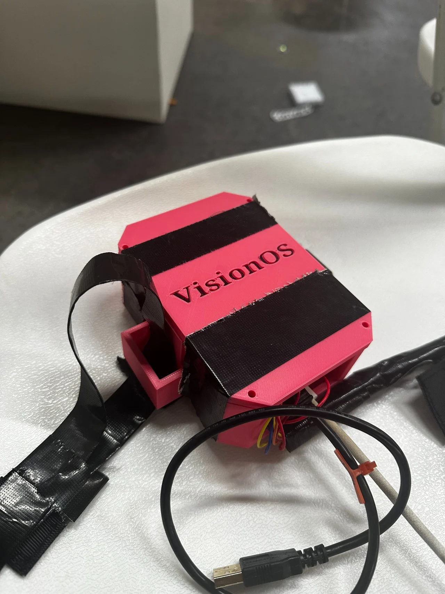
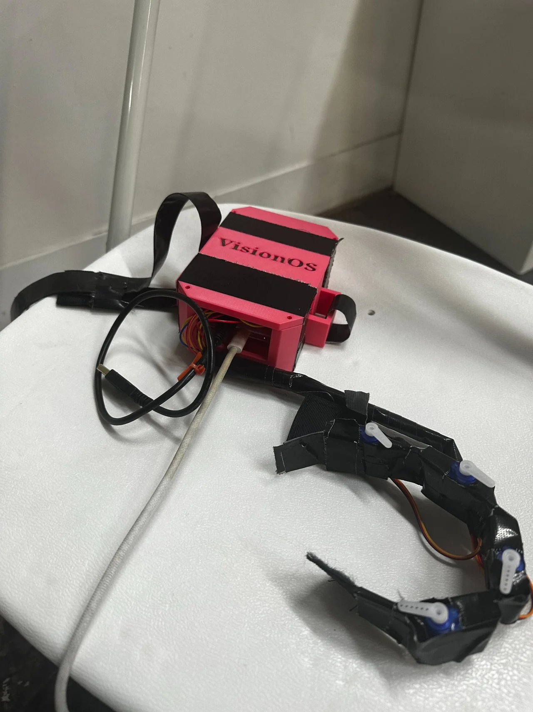

“What’s around me?”
Understand the scene.
Hear a description of what the camera can see. Ask a follow-up when you need more detail.

VisionOSAI that reaches into everyday life
Step-by-step speech and tactile guidance, built to put more spatial awareness and everyday control in your hands.

Our mission
We’re building a world where blind and low-vision people have greater control over their surroundings, their choices, and their everyday lives.
An unfamiliar layout or a hard-to-locate control can leave essential information out of reach. VisionOS connects visual understanding with speech and tactile cues, helping turn “where is it?” into “what’s my next move?”
Knowing what’s nearby is a beginning. We’re building assistance that stays with you through the next movement.

Ask for an everyday object. The prototype identifies a candidate, checks the match, and tracks the target.
Hand tracking and available depth information translate the target’s position into step-by-step speech and tactile guidance.
You move your hand and stay in control. The wearable supplies directional cues as you reach.
Early prototype. Guidance depends on camera visibility, calibration, depth quality, and the connected hardware setup.
Assistance for the scene in front of you, the moment you missed, and the people you choose to hear from.
“What’s around me?”
Hear a description of what the camera can see. Ask a follow-up when you need more detail.
“What did I miss?”
Get a recap of recent visible changes from a short image history. The prototype does not record ambient conversations.
Family Notes + Voice
Trusted people can leave notes to hear between tasks or when a relevant object is found. With consent, a helper’s notes can use an AI copy of their voice, with a listener opt-out.
Explore Family NotesIntelligence, made tangible
An iPhone supplies camera and depth information. The current laptop-supported prototype turns that context into spoken responses and wearable cues.
A coordinator routes requests to object-finding, scene-description, and recent-context specialists. Anthropic handles intent routing; Gemini interprets visual information.
Local tracking and guidance turn verified observations into cues. AI models do not directly control the wearable.
Fresh hand and target observations inform the next movement. Missing or unreliable evidence pauses guidance rather than filling in the gaps.
Servo-driven wearable feedback adds a physical sense of direction. The user makes the movement.
Voice requests, spoken responses, and local stop handling keep the interaction accessible without relying on a screen. Cartesia supports conversational speech; local audio handles immediate guidance.
The project also includes a native iPhone app, a watch-only helper interface, and the Family Notes companion.


Our story
We started VisionOS at Cal Hacks with a question: how can AI offer useful help in the physical world?
Our answer begins with the space between understanding a task and carrying it out. We’re connecting visual context to step-by-step assistance, starting with everyday object finding and reaching.
Our broader ambition includes interacting with buttons, doors, and kiosks. Those are goals we’re working toward, not completed real-world demonstrations.
We want blind and low-vision people, accessibility practitioners, and hardware collaborators to help shape that work.
Follow the build on GitHub